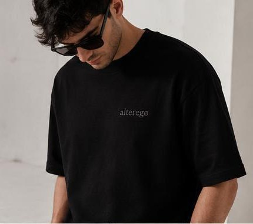
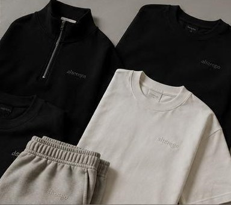

Linea uomo
Premium.
La linea principale di alteregø. Minimal luxury con lo sguardo rivolto a Capri e Portofino: costruzione sartoriale, tessuti leggeri, ricami tono su tono.
Less is identity.
Il carattere
Sartoriale
ma leggera.
Premium nasce da una regola semplice: togliere. Nessun logo urlato, nessun contrasto, nessuna stagione da rincorrere. Restano la linea del capo, la mano del tessuto e un ricamo dello stesso colore della stoffa.
Le vestibilità sono over e fluide, pensate per cadere bene sul corpo senza costringerlo. La palette non cambia: cream, sabbia, taupe, grigi, nero. Sono capi che si combinano senza pensarci.
- Minimal luxury
- Senza tempo
- Stile
- Minimal luxury. Linee pulite e sofisticate, nessun eccesso.
- Ricami
- Sempre tono su tono, mai a contrasto.
- Tessuti
- Leggeri e premium: lino, poplin di cotone, maglie fini.
- Vestibilità
- Over e fluida, costruita per cadere bene sul corpo.
- Colori
- Neutri e naturali. Cream, sabbia, taupe, grigi, nero.
- Mood
- Capri e Portofino. Luce piena, ombra corta, niente fretta.
I capi
Il guardaroba,
per intero.
Camicie, maglieria, capospalla, pantaloni. Ogni capo porta il ricamo alteregø nello stesso colore del tessuto.


Nota
Tono su tono
Il logo è ricamato con lo stesso filo del tessuto: a due metri è una texture, a mezzo metro è una firma.
- 01 Camicia in lino
- 02 Camicia camp-collar
- 03 Polo in maglia
- 04 Polo half-zip
- 05 T-shirt oversize
- 06 Blazer destrutturato
- 07 Overshirt
- 08 Bomber
- 09 Pantalone ampio
- 10 Shorts
- 11 Cappellino
I look
Otto look.
I look della collezione nascono dagli stessi undici capi, combinati in otto modi. Sono nomi, non regole: il lino chiaro del giorno, il nero della sera, i grigi di mezzo.
- 01 Lino Set
- 02 Nero Essenziale
- 03 Capri Cream
- 04 Ocean Grey
- 05 Sabbia Suit
- 06 Nero Soft
- 07 Capri Striped
- 08 Graphite Suit
Colorway
I pantaloni,
otto colori.
Il pantalone ampio è il pezzo che tiene insieme la linea. Esiste in otto colorway: quattro appartengono alla palette di brand, gli altri quattro vanno visti dal vivo.
Lino Cream
Sabbia
Grey Taupe
Icon Black
Anche in
- Off White
- Stone
- Elephant Grey
- Black Wide
Su questi quattro preferiamo non mostrare un campione a schermo: la differenza tra Stone ed Elephant Grey è una questione di luce, e un rettangolo di colore la racconterebbe male. Scrivici per vederli dal vivo
Dettagli invisibili
Quello che si vede
solo da vicino.
Tre dettagli che non si notano in una foto di gruppo e che decidono tutto: il ricamo, l'etichetta, il lockup.

Simple is powerful.
Il payoff del mondo core nero.
alteregø Premium
Designed for the version of you nobody sees.
Scrivici per vedere la collezione, o per una selezione per il tuo store.
Contattaci